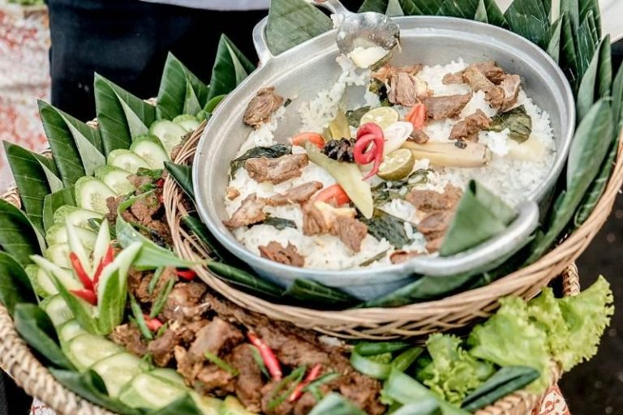

Nasi Liwet Domba Garut
Nasi liwet yang satu ini berbeda dengan nasi liwet yang biasanya pasalnya nasi liwet ini menggunkan olahan daging domba didalamnya. Nasi liwet ini baru-baru ini muncul atas dari ide pengusaha bernama Jajang Riyadi. Meskipun baru muncul baru-baru ini, nasi liwet sudah menjadi ikon kuliner garut bahkan setiap ada acra-27acara ber nasi liwet domba ini ajib dihidangkan bahkan nasi liwet domba ini sudah diperkenlkan ke mancanegara. Pelopor ide ini mulai memperkenalkan hidangan ini ke timur tengah dan cocok dengan lidah mereka.